“AI, 나도 한번 써볼까?” 망설임에서 출발한 도전은 어느새 일하는 방식의 변화를 이끌어내는 실험이 되었다. AI 활용에 대해 막연한 궁금증을 품고 있던 사원들이 직접 도전장을 내밀었다. 2025년 네 번째 ‘오일 챌린저스’의 주인공이 된 5인의 KNOC인들은 ‘하루 한 번, AI 사용기’라는 주제로 5일간 특별한 프로젝트를 수행했다. 누군가는 업무의 효율을 높였고, 누군가는 새로운 아이디어를 떠올렸다. 짧지만 밀도 높았던 이 실험을 통해, 그들은 AI가 단지 ‘도구’가 아니라 ‘일의 방식을 바꾸는 계기’가 될 수 있음을 경험했다. 지금, 그들이 직접 써보고 남긴 AI 사용기를 들어보자.
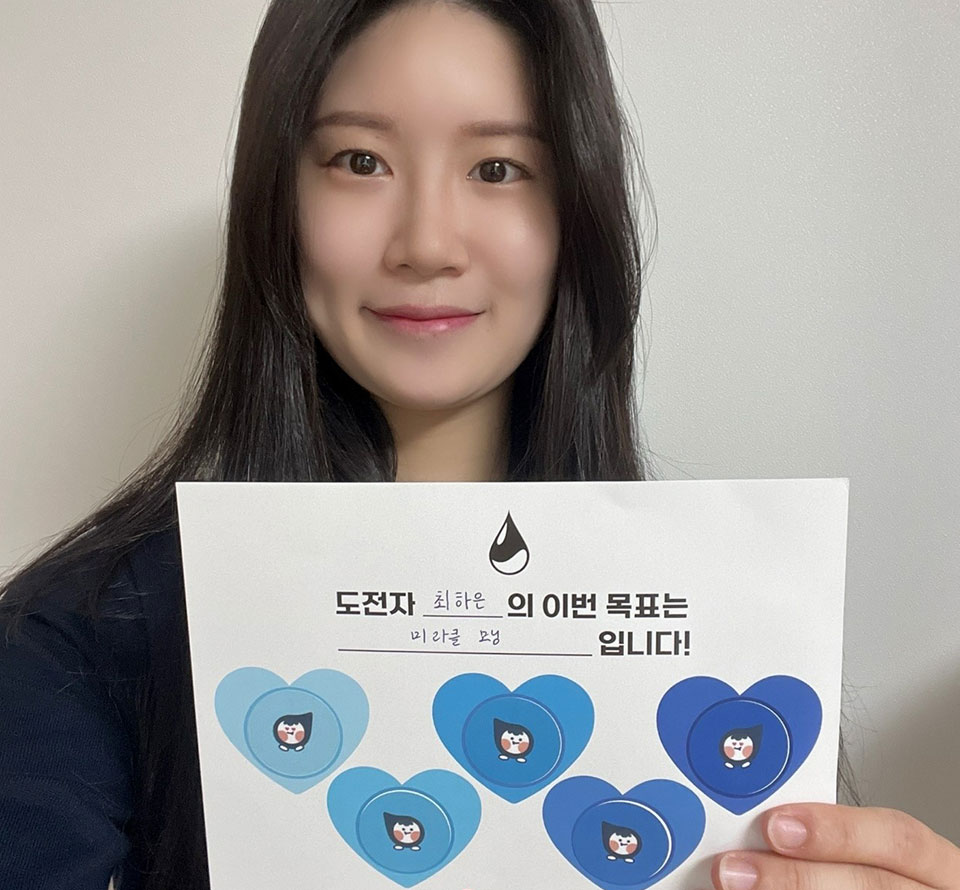
국내사업개발처 국내개발전략팀
서광원 과장
1일차 – AI와 함께 만드는 나만의 업무 도구
이번 ‘오일 챌린저스’의 취지를 시작하며 가장 먼저 떠오른 생각은
‘어떻게 하면 업무를 더 효율적으로 할 수 있을까?’였습니다. 1일
차에는
AI를 이용하여 생산성 향상 웹프로그램을 만들어보았습니다.
젠스파크AI를 통해 업무 내용을 마크다운 포맷으로 작성할 수 있는
에디터, To-Do 리스트 관리 및 알람 프로그램, 업무 집중도를 높일
수 있는 시간 관리 프로그램(포모도로 타이머)을 만들며 몇 번의
오류가 있었지만 AI에게 물어보며 수정을 거쳤고 1~2시간 만에
멋진 웹프로그램을 만들 수 있었습니다.
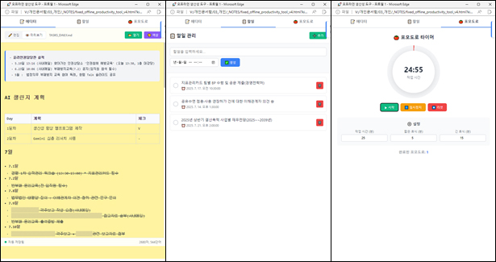
2일차 – 모르는 분야, AI가 도와드립니다
올해 초부터 ChatGPT, Grok, Gemini 등에서 모두 심층 리서치
서비스를 시작했습니다. 리서치의 논리적 구성 측면에서는
ChatGPT가, 리서치의 방대함에 있어서는 Google 검색을 기반으로
하는 Gemini가 뛰어나지 않나 생각이 듭니다. 오늘은 Gemini를
이용해서 심층 리서치 기능을 이용해보았습니다. AI가 알아서 무려
72개의 출처를 찾고, 이 중 43개의 문서를 활용하여 단시간만에
저의 질문에 대한 보고서를 작성해주었습니다. 잘 알지 못하는
분야, 생각하지 못한 관점, 시간과 능력 부족으로 미처 다 읽고
파악하지 못하는 부분을 AI를 활용함으로써 과거에서는 상상할 수
없었던 수준으로 생산성과 효율성이 높아짐을 체험할 수
있었습니다.
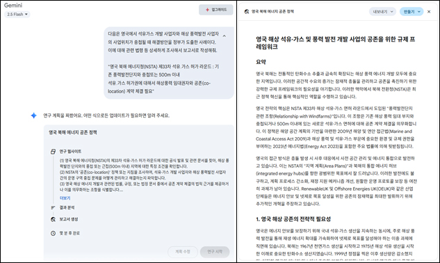
3일차 – 바쁜 아침, AI가 요약해주는 뉴스 브리핑
ChatGPT가 등장했던 2022년 11월만해도 AI 서비스라고 하면
ChatGPT만을 떠올렸지만, 이제는 Gemini, Grok과 같이 빅테크가
직접 제공하는 서비스와 더불어 빅테크의 API를 이용하여 사용성을
높인 다양한 AI 도구들도 등장하고 있습니다. 7월 16일 타운홀
미팅에서 시연한 Genspark도 요즘 핫한 AI 도구이고, 최근
서비스를 시작한
Flowith도 에이전틱 AI 기능을 잘 구현했다는 평을 받고
있습니다. 오늘은 Flowith를 이용해서 몇몇 E&P 뉴스
사이트로부터 최근 뉴스를 불러오고, 이를 요약해서 매일 아침
저의 이메일로 보내는 작업을 해보았습니다.
출근 준비와 아이 등원 준비로 바쁜 아침 시간에 AI가 저 대신
일을 해주고 알잘딱깔센하게 정리해서 메일로 보내주니 전문
비서를 둔 느낌입니다. 팀원들과 커피 타임 때 이런 기능이 있다는
것을 보여주고, 업무 중에 적용해볼 만한 아이템이 있는지
얘기해보면 재미있을 것 같습니다.
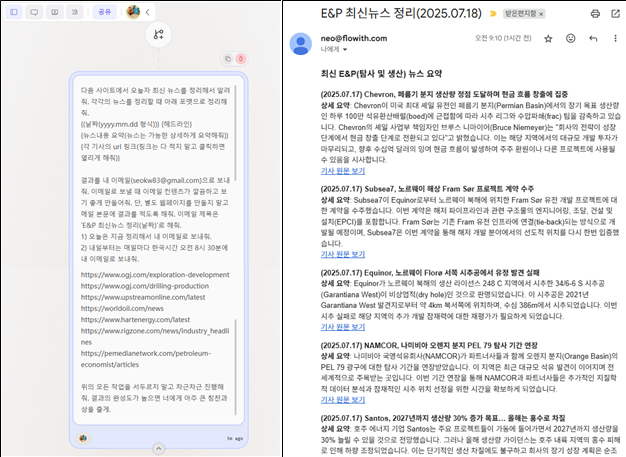
4일차 – 복잡한 법령도 한눈에! Flowchart 만들기!
Markdown 포맷처럼 Meramaid 다이어그램은 AI가 잘 이해하고
작성할 수 있는 차트나 그래프 작성 포맷입니다. Mermaid
다이어그램은 텍스트와 HTML, CSS를 사용해서 플로우차트,
간트차트, 파이차트 등을 간단히 만들 수 있습니다. 오늘은
우리 부서에서 주로 참조하는 해저광물자원 개발법을 분석해서
사업단계의 Flowchart를 작성해봤습니다.
법령 전체를 검토하고 PPT를 이용해서 플로우차트를 그리면 몇
시간은 소요되었을 것인데, 아래처럼 법령 PDF를 첨부하고
프롬프트로 요청하니 순식간에 금방 보기 좋은 플로우차트가
완성되었습니다.
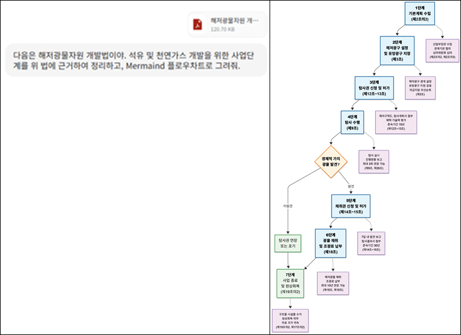
5일차 – 책을 PPT로 요약하는 AI의 능력
5일차에는
Genspark로 유발 하라리의 신간 「넥서스」를 PPT로
만들어달라고 요청했습니다.
「넥서스」는 AI를 ‘스스로 결정을 내리고 스스로 새로운
아이디어를 구상할 수 있는 역사상 최초의 기술’로 평가하며,
민주주의와 전체주의의 과거·현재·미래에 대해 얘기하는 책입니다.
AI 시대의 필독서라고 생각하여 이 책을 읽었고, 책의 내용을 더
잘 이해하고 요점을 파악하기 위해 PPT로 제작해보았습니다. 5일
동안 AI 챌린지를 통해 AI가 내가 모르는 지식을 쉽게 설명해주고,
나와 다른 관점을 제시하고, 방대한 정보를 단시간에 찾아
요약해주는 등 생각의 확장과 생산성 향상에 큰 도움이 될 수
있다는 것을 피부로 느낄 수 있었습니다. 언젠가 AI가 업무정보에
접근할 수 있게 되고, 공사 구성원들이 AI를 업무에 직접 활용할
수 있게 되면 개개인의 생산성 향상을 넘어 조직과 업무를
최적화할 수도 있겠다는 생각이 들었습니다.
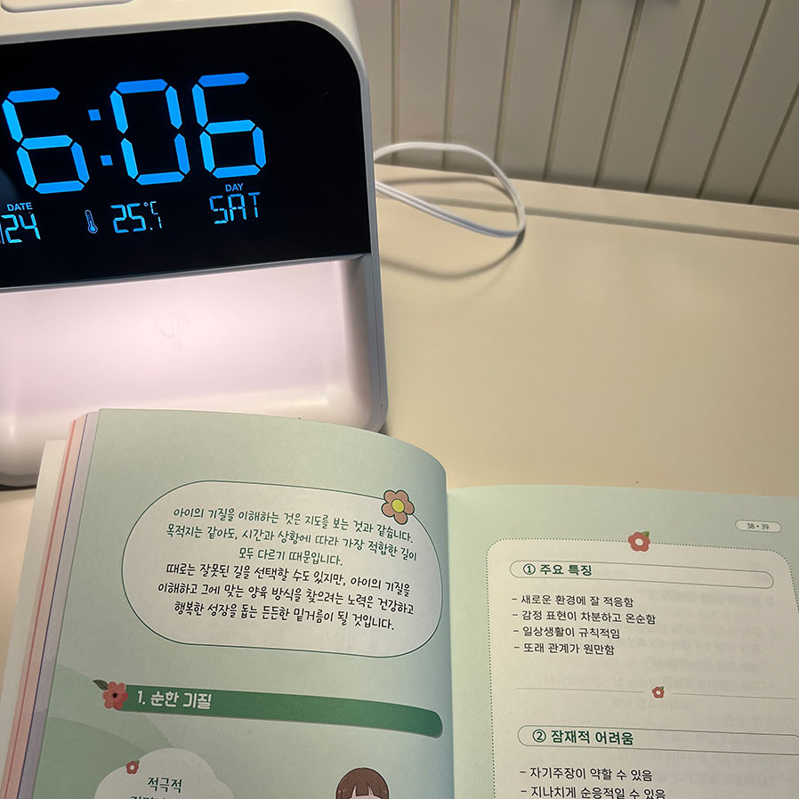
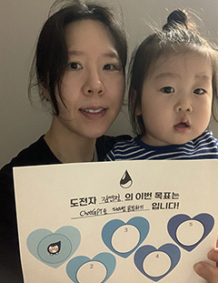
스마트데이터센터 데이터혁신팀
김연정 대리
저의 이번 ‘오일 챌린저스’ 목표는
ChatGPT로 파이썬 공부하기입니다. ‘코딩=언어’라고
하는데요. 그중에서도 파이썬을 선택한 이유는 세계적으로 가장
많이 쓰고 인기 있는 programming language이기 때문입니다. 5일
동안 코딩 선생님 ChatGPT와 꾸준히 파이썬을 공부해보았습니다.
파이썬의 기초부터 공부하기 위해 ChatGPT에게 “내가 파이썬 공부
1일 차거든. 컬렉션 자료형(리스트, 튜플, 사전, 집합)에 관한
초등학생 수준의 문제 3개씩 내줘. 대신 답은 보여주지 마.”라고
말하고 ChatGPT가 내준 문제를 풀고, 어려우면 힌트도 달라고 하여
문제를 풀었습니다. 주로 퇴근 후, 아이들이 잠들면 짬을 내어
노트북을 켜고 파이썬 기초 수업을 들으며 ChatGPT와 함께 공부를
했습니다. 습관이 들려면 많은 시간이 필요하겠지만, 능력이
뛰어난 과외선생님 ChatGPT를 만나게 되어 비전공자가 코딩에
접근해보고, 즐거운 경험을 할 수 있었습니다.
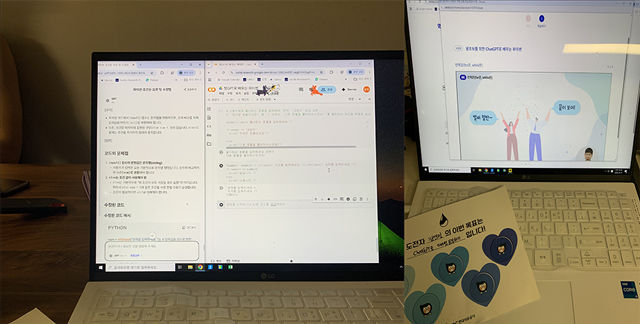
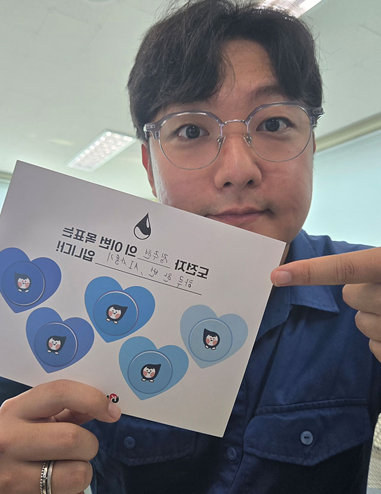
거제지사 관리팀
정주현 사원
5일간 AI를 활용해보는 챌린지를 통해, 평소 마음만 먹고 실천하지 못했던 영어 공부를 재미있고 쉽게 시작할 수 있었습니다. 매일 새로운 비즈니스 영어 표현을 AI를 통해 배우며, 실무에 바로 적용할 수 있는 표현을 자연스럽게 익힐 수 있었고, 단순한 정보 검색을 넘어 실제 업무 상황에 밀접한 학습이 가능하다는 점이 특히 인상 깊었습니다. 반복 학습이나 예문 작성도 Ai의 도움을 통해 부담 없이 꾸준히 활용할 수 있었으며, 이번 경험을 통해 앞으로 업무와 자기 계발에 AI를 더욱 적극적으로 활용하고 싶다는 동기부여를 얻었습니다.
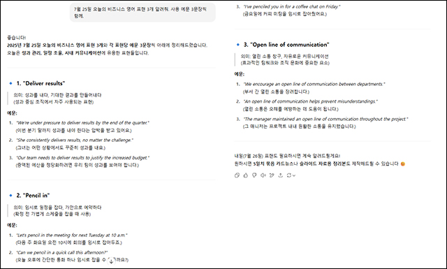
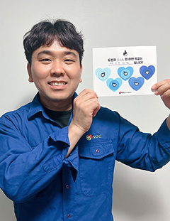
서산지사 시설팀
양수용 대리
평소 설비 개선이나 보수 방향 검토를 위해 자료 조사와 업체 소통에 많은 시간이 소요됐습니다. 이번 AI 활용 경험을 통해 그 과정이 훨씬 더 효율적으로 바뀔 수 있음을 확인했습니다. 회식 건배사처럼 소소한 고민부터 업무 자동화를 위한 VBA 코딩까지, 다양한 분야에서 AI의 도움을 받을 수 있다는 점이 무척 인상 깊었고, 앞으로도 꾸준히 활용해보고자 합니다.
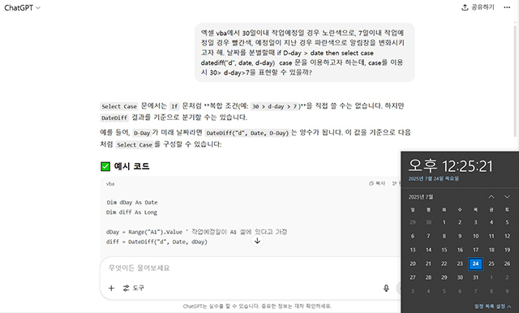
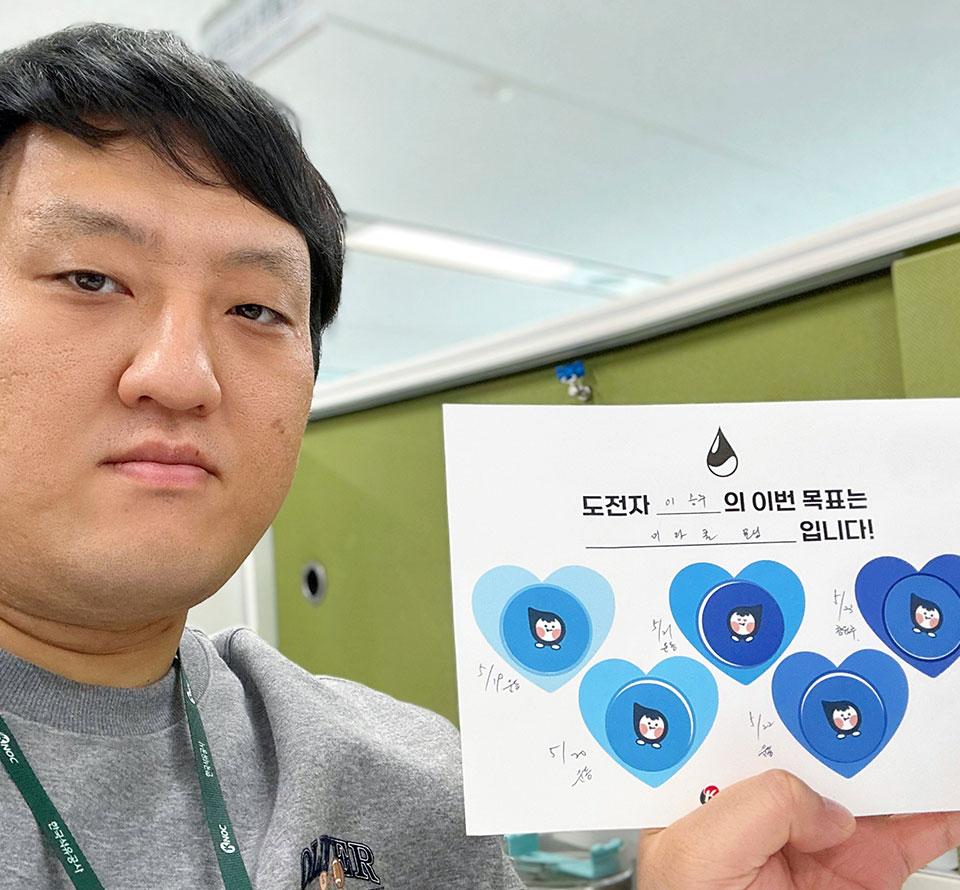
거제지사 안전팀
정해솔 사원
AI를 활용한 업무 진행 이벤트에 참여하면서 빠르게 답을 얻을 수 있다는 점이 참 편리하게 느껴졌습니다. 처음에는 가끔 엉뚱한 답변이 나와 당황하기도 했지만, 질문에 조건이나 상황을 조금 더 자세히 설명하니 정확한 답을 받을 수 있었습니다. AI도 사람이 쓰는 도구인 만큼, 사용하는 방법이 참 중요하다는 걸 알게 되었습니다. 이번 ‘오일 챌린저스’를 통해 AI를 더 잘 활용할 수 있는 자신감이 생겼습니다. 앞으로도 업무의 효율을 높이는 데 자연스럽게 도움이 되었으면 좋겠습니다.
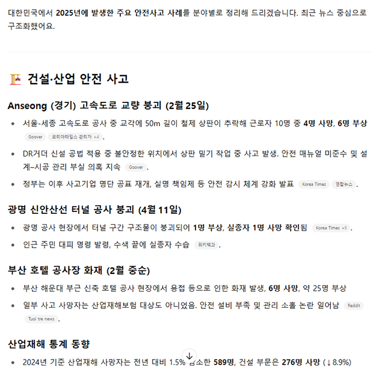